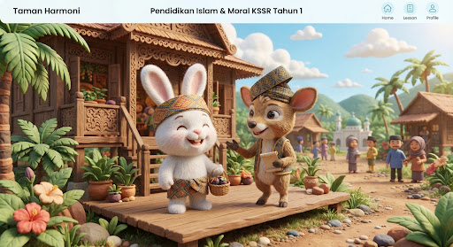
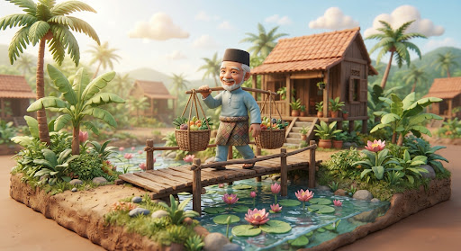
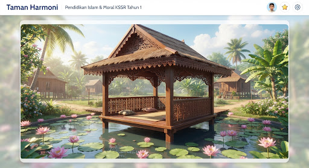

Taman Harmoni Kasih
🌸verified Misi 4 drp 6: Adab Bersopan Santun & Bantu-Membantu di Kampung

“Wahai Wira Adam! Lihat Tok Wan memegang bakul kuih yang berat di jambatan. Apakah amalan terpuji dan beradab yang patut kita lakukan?”
Pilih Tindakan Beradab

🧺 Situasi: Tok Wan kelihatan letih membawa hasil kebun ke gerai pasar kampung.
Nilai KSSR: Hormat-menghormati dan tolong-menolong sesama jiran mengeratkan kasih sayang sekampung!
A. Segera Hulur Bantuan & Beri Salam Mesra
Adab Sopan & Hormat Warga Emas
B. Berlari Melepasi Tok Wan Tanpa Menegur
Kurang Prihatin
C. Memerhatikan Sahaja Dari Jauh
Tidak Bertindak
D. Memanggil Kawan Untuk Mentertawakannya
Perilaku Tidak Baik
Peta Nilai Murni Taman Harmoni
Kasih Sayang Terhadap Keluarga & Sahabat
Selesai • SempurnaBersikap Jujur & Amanah Dalam Permainan
Selesai • SempurnaTanggungjawab Kebersihan Diri & Kampung
Selesai • SempurnaHormat-Menghormati & Beradab Sopan
Sedang Dijalankan • Cabaran 2/3Toleransi & Hidup Rukun Damai
Buka selepas Unit 4Kerajinan Membina Kampung Impian
Peringkat Akhir
Wakaf Teduhan Kasih & Kolam Teratai
Membina wakaf teduhan berehat untuk orang tua dan pelawat di pinggir laman kampung.